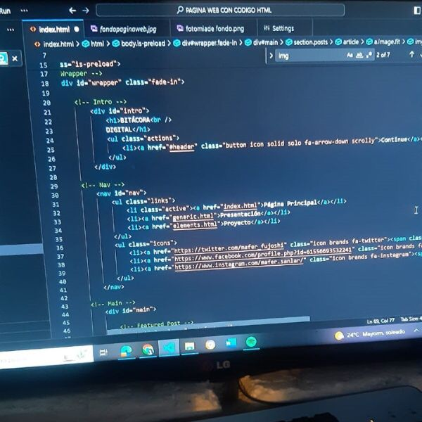
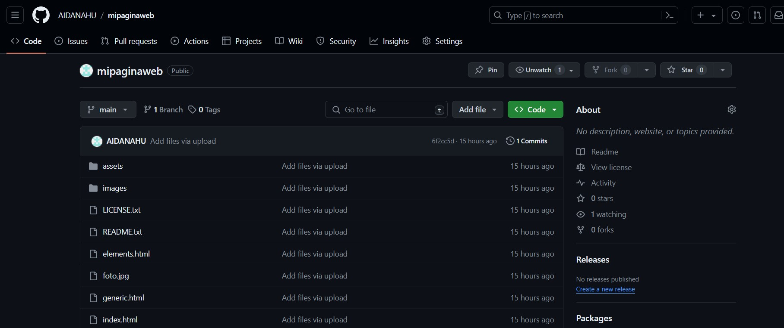
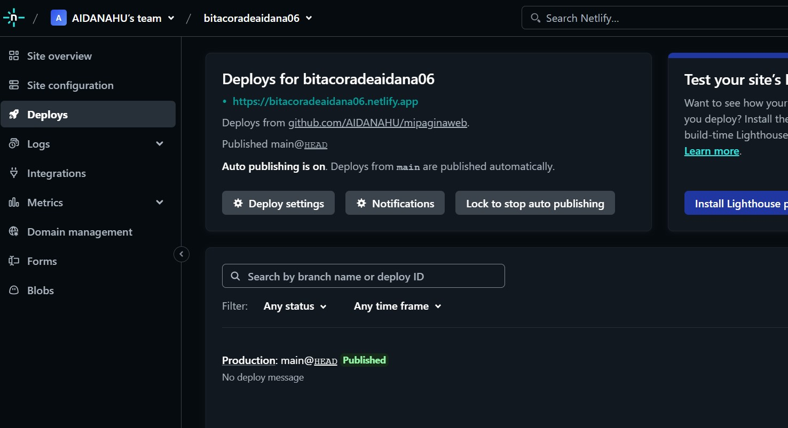

Semana 1
Sesión 1 y 2

Empecemos! En estas primeras clases se comenzó poco a poco con los fundamentos de programación, los primeros codigós para poder conocer la interfaz de Visual Studio Code y el manejo del HTML. También, se llevo a cabo los pasos necesarios para la creación de nuestra bitacora personal.
Semana 2
Sesión 3
En esta tercera sesión, tuvimos una clase mas teorica en la que vimos nuevos mas etiquetas de HTML y la diferencia entre la apariencia de caracteres y la apariencia de espacio. Tambien, nos mostró lo que son las listas y sus diferentes usos. Se complemento con la explicacion de como agregar imagenes, videos y audio dentro de nuestra pagina web.
Semana 3
Sesión 4 y 5

El profesor nos enseño las interfaces y códigos para el diseño web usando HTML 5 y CSS 3. Vimos la estructura del CSS y algunas de sus reglas de diseño y configuración tales como:
- Color
- Background-color
- Opacidad
- HSL(Hue,Saturation,Lightness)
- Fuente
- Tamaño
- Fuente no instalada
- Formato de fuente
- Negrita
- Mayúsculas
- Minúsculas
- Letra Capital
Semana 4
Sesión 6 y 7

En esta sesión, tuvimos el repaso de las reglas que contiene el CSS y dudas sobre nuestras paginas web. Tambien, la edición de iconos y como insertar enlaces.
Semana 5
Sesión 8 y 9


En la sesión se empezó con aprender a utilizar la página web de Github. Esto es un sitio web donde los programadores pueden trabajar juntos en proyectos de software. Es como una especie de carpeta en línea donde se guarda y comparte un código. Ayuda a colaborar, ver quién ha hecho qué cambios y mantener todo organizado. Es por ello que empezamos subiendo todas las carpetas del contenido a la nube y se almacenen en un servidor, teniendo con ese paso nuestro sitio web.
Luego procedimos a entrar a la pagina de Netlify para poder generar nuestro propio enlace o link web personalizado.